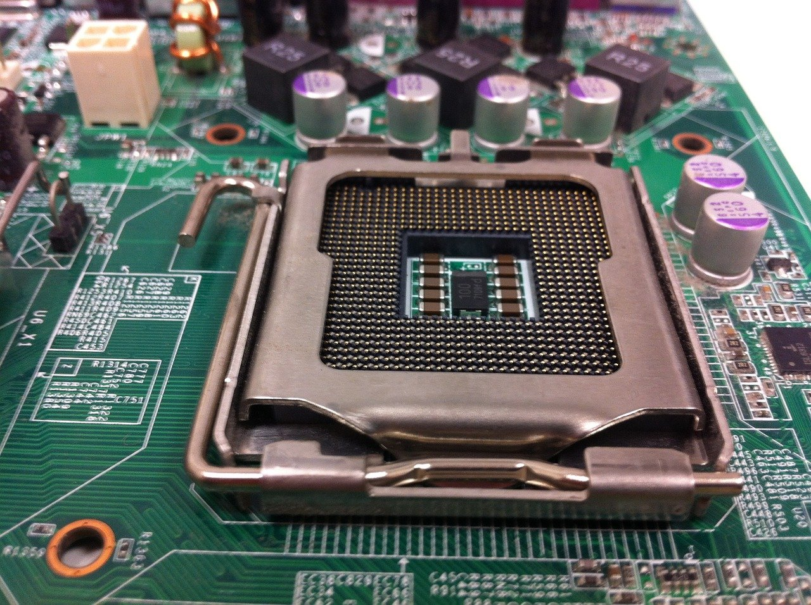
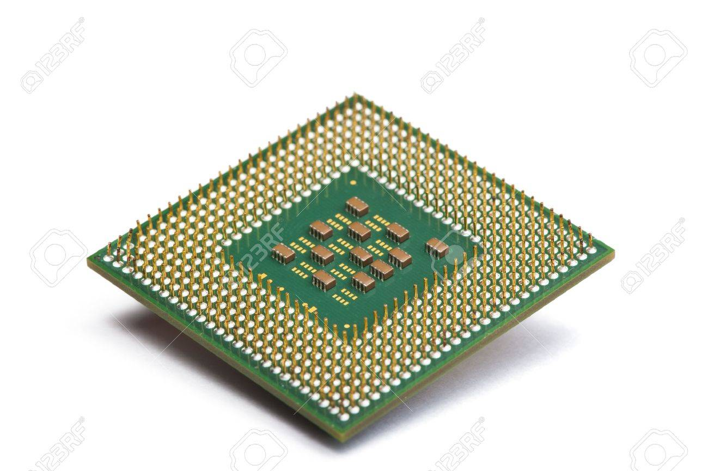
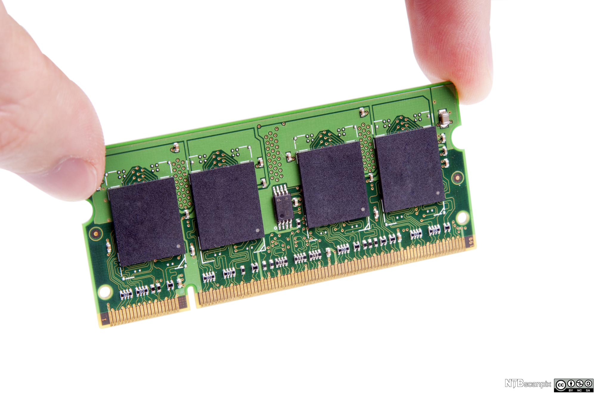

Datakomponenter
Hjem Om
Hovedkort
-
Hovedkortet er et stort firkantet kretskort som kobler
sammen alle delene/komponentene i en datamaskin. På
hovedkortet finner vi "kun-leseminne" (ROM), her ligger
informasjonen om hvordan datamskinen skal starte opp.

Prosessor
-
Dette er hjernen til datamaskinen. dataprogrammer utfører
beregninger basert på det binære tallsystemet, beslutninger
og beregninger blir gjort i prosessoren. denne ligger på
hovedkortet med en vifte for å hindre overoppheting.

Arbeidsminne
-
Arbeidsminnet finner vi i RAM-brikker. prosessoren lagrer
beregningen i disse brikkene mens den arbeider. Dette er
minne ikke lagres når maskinen skrus av. Ram gjør det
enklere for prosessorer som krever mange beregninger (store
bilder og videoer)

Skjermkort
-
Også kalt grafikkort behandler informasjonen fra prosessoren
før det vises på skjerm. Grafikkortet har en egen innebygd
prosessor som avlaster hovedprosessoren og gir da bedre og
raskere bildevisning.

Lagringsmedium
-
Lagringsmediumet arbeider ikke like raskt som RAM-brikkene,
men filene man lagrer på lagringsmediumet forblir lagret når
datamaskinen skrus av. i PC-er er det vanlig å bruke en
HDD(hard disk drive), SSD(solid state drive) eller en
balnding av
-
HDD: henter ut informasjon mekanisk fra magnetiske skiver
som den er bygd opp av. Dette gjør at hardiskens hastighet
begrenses.
-
SSD: elektronisk lagring, informasjon hentes ikke mekanisk,
en SSD er derfor raskere enn en hardisk. Dette er det
vanligste å bruke.